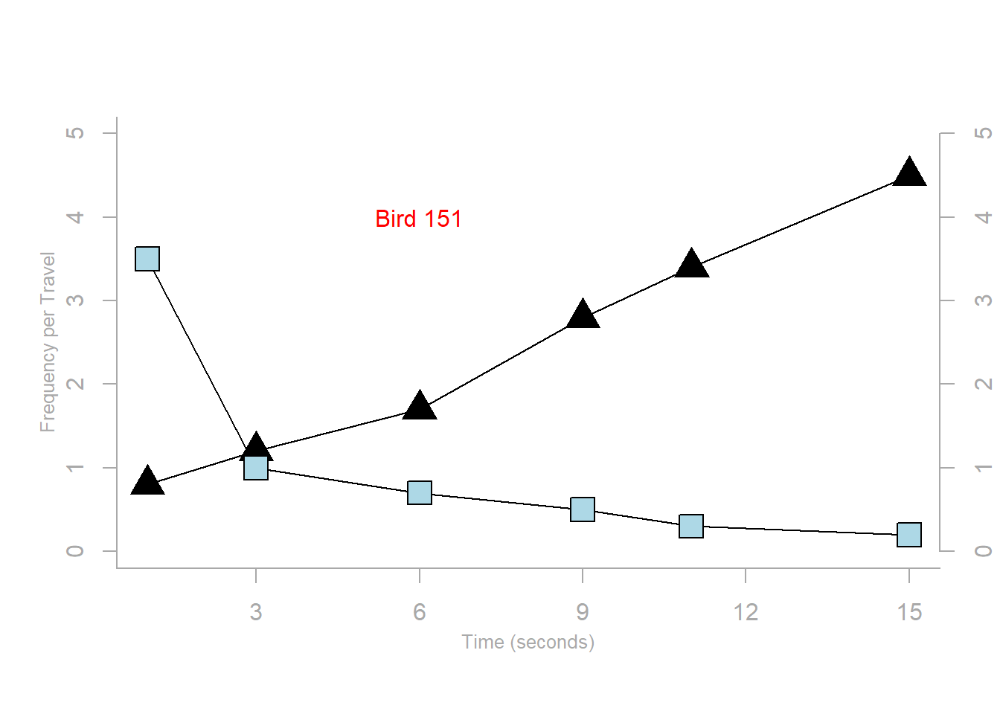

# Scatterplot with modified elements
x_vals <- c(1, 3, 6, 9, 11, 15) # New x-values for the plot
y1_vals <- c(0.8, 1.2, 1.7, 2.8, 3.4, 4.5) # New y1 data
y2_vals <- c(3.5, 1.0, 0.7, 0.5, 0.3, 0.2) # New y2 data
plot.new()
plot.window(range(x_vals), c(0, 5))
lines(x_vals, y1_vals)
lines(x_vals, y2_vals)
points(x_vals, y1_vals, pch=17, cex=2.5)
points(x_vals, y2_vals, pch=22, bg="lightblue", cex=2.5)
par(col="darkgray", fg="darkgray", col.axis="darkgray")
axis(1, at=seq(0, 16, 3))
axis(2, at=seq(0, 5, 1))
axis(4, at=seq(0, 5, 1))
box(bty="l")
mtext("Time (seconds)", side=1, line=2, cex=0.8) # Label for x-axis
mtext("Frequency per Travel", side=2, line=2, las=0, cex=0.8) # Label for y1-axis
mtext("Frequency per Second", side=4, line=2, las=0, cex=0.8) # Label for y2-axis
text(6, 4, "Bird 151", col="red") 